Jogo do Unicórnio
A Sofia, de 7 anos, inventou um jogo numa tarde de domingo. O pai dela, Rafael, e o Claude ajudaram a transformar as ideias em desenhos, depois em código, e no fim todo mundo jogou na TV da sala.
▶ Jogar agora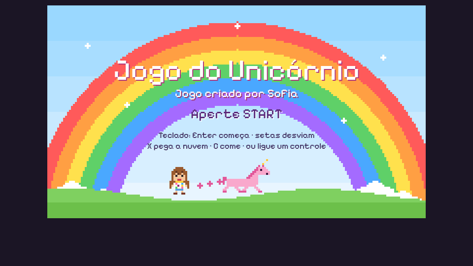
A história do jogo
Uma menina vive numa fazenda com o seu cavalo. Numa tarde aparece uma fada, que dá dois presentes ao cavalo: o poder de voar baixinho e uma bolsinha rosa.
Começa a corrida. No caminho aparecem doces gigantes, pirulitos, cupcakes, brigadeiros e barras de chocolate, e o cavalo precisa desviar de todos. Ele só pode comer as nuvens de algodão-doce: chega perto, pega um pedacinho com a pata e guarda na bolsinha. Quando quiser, come um pedacinho e fica mais forte e mais colorido, e ainda ganha de volta um coração de vida.
Cada pedacinho é uma cor nova: rosa, lilás, azul, verde, dourado e, no fim, arco-íris. Junto com as cores ele sobe. Só o começo é perto do chão; logo a fazenda fica pequena lá embaixo, depois só tem céu, depois estrelas, e no final aparece o arco-íris mais lindo do mundo.
Como jogar
| O que faz | Controle (DS4) | Teclado | Celular |
|---|---|---|---|
| Começar, passar a história, pausar | OPTIONS | Enter | START na tela |
| Subir e descer para desviar dos doces | ▲ ▼ ou analógico | setas | ▲ ▼ |
| Perto de uma nuvem: pegar um pedacinho de algodão-doce | X | X ou Espaço | X |
| Comer um pedacinho da bolsinha | ○ | C | ○ |
O cavalo tem 5 corações. Cada trombada num doce tira um; se acabarem, ele volta a ser cavalo e recomeça do início. No computador, F põe em tela cheia e M desliga o som. No celular, dá para jogar em pé ou deitado.
Quem fez o quê
Sofia e Rafael
Tiveram todas as ideias e tomaram todas as decisões: o tema, as regras, as cores, os doces. A Sofia desenhou a escala dos doces e testou o jogo na TV com o controle.
Assistente de voz
O Claude no app do celular. Ouvia o Rafael e a Sofia conversando e mandava cada pedido, por escrito, para a sessão que programava.
Agente de programação
O Claude no Claude Code, numa sessão registrada no rex, o sistema de tarefas do Rafael. Desenhou os key-frames, perguntou o que faltava decidir, escreveu o código e abriu o jogo na TV.
Uma regra valeu a tarde toda: nada de código antes de a Sofia aprovar os desenhos. Primeiro vieram os key-frames, telas desenhadas do jogo que ainda não existia, refeitas várias vezes até ficar do jeito dela. Só depois da aprovação começou a programação.
Cronologia
Tudo aconteceu em pouco mais de uma hora e meia, no horário de Brasília. Os horários vêm do registro da sessão e dos commits.
- A tarefa começa.
O Rafael pede ao Claude ajuda para criar um jogo com a filha. A sessão de trabalho é aberta no rex.
- A primeira ideia, por escrito.
Unicórnios. Uma pessoa tem um cavalo, uma fada o transforma num unicórnio rosa, que muda de cor ao ficar mais forte até virar arco-íris. Funciona com o controle DS4. Abertura com "Jogo do Unicórnio" e um arco-íris. Estilo parecido com o Stardew Valley. Desviar de doces. Feito em JavaScript, no navegador.
- Key-frames, versão 1.
Nove telas desenhadas em pixel art, a história em oito passos e as seis cores. Ainda com o jogo visto de lado.
- A Sofia escolhe o Stardew Valley.
O jogo passa a ter o chão em quadradinhos, os personagens de lado e sombra para mostrar a altura. O Rafael pede: "não programe ainda". Ganha uma seção de direção de arte.
- O desenho a lápis da Sofia.
Em lápis de cor: o unicórnio pequeno voando perto de uma nuvem, um controle enorme cheio de doces e uma barra de chocolate. Daí saíram os doces gigantes como obstáculos e o desvio com cima e baixo. Ela decide também que o cavalo já voa baixinho desde o começo, que o cenário fica mais bonito conforme ele avança e que só as nuvens de algodão-doce dão força.
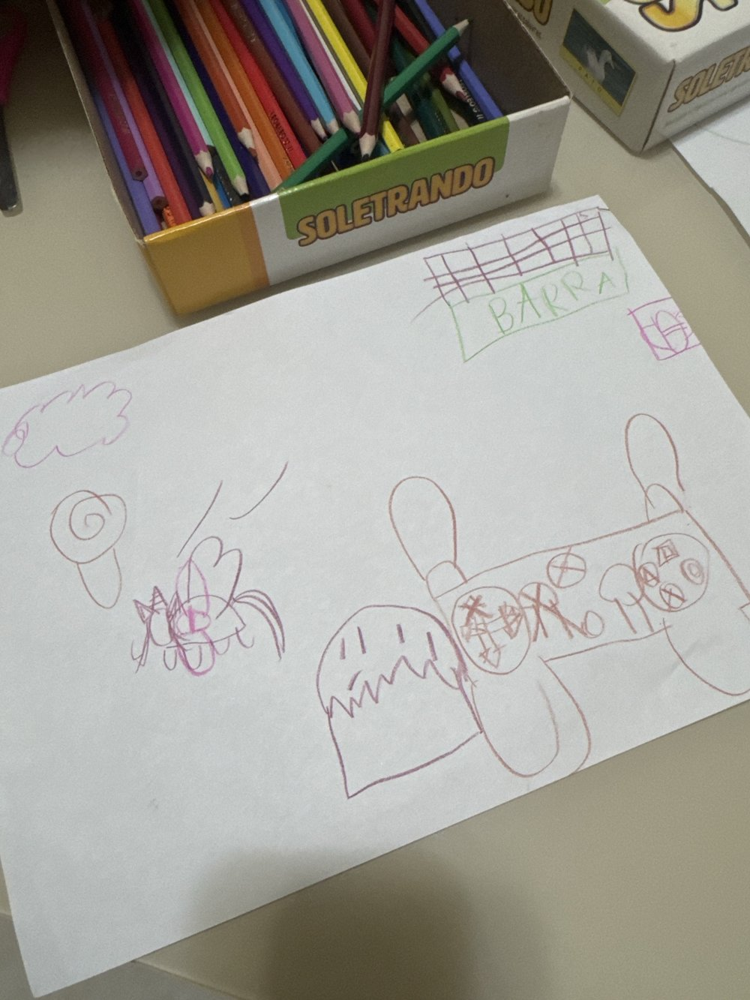
O desenho original da Sofia, a referência de escala dos doces: o unicórnio pequeno voando perto de uma nuvem e de um pirulito; o controle enorme, que mostra como ela ia jogar, com um cupcake ou brigadeiro ao lado; e, no alto, a barra de chocolate. - A bolsinha e a vida.
Perto da nuvem, um botão faz o cavalo ir até ela, pegar um pedacinho com a pata e guardar numa bolsinha bonitinha; outro botão come. E o unicórnio tem vida: cada trombada num doce tira um pouquinho.
- Do chão ao céu, rápido.
Só o comecinho é perto do chão. Na segunda ou terceira cor ele já voa alto; da quarta em diante não há mais fazenda, só céu, estrelas e o arco-íris.
- Aprovado.
"A Sofia está muito satisfeita com o planejamento." O algodão-doce também devolve um coração. X pega, bolinha come. Pode programar.
- Primeira versão jogável.
História, corrida, doces, bolsinha, corações, sete cores e o final. Antes de entregar, um robô jogou uma partida inteira até o arco-íris para conferir as regras.
- Na TV, com o controle.
O jogo é aberto no laptop ligado na TV, o controle DS4 é conectado por Bluetooth e a tela de abertura ganha um teste que mostra o botão apertado.
- "A gente adorou o jogo!"
Primeiro pedido depois de jogar: escrever "Jogo criado por Sofia" na tela inicial.
- Musiquinha.
Uma música de fundo bem baixinha, no estilo de toque MIDI antigo, tocada pelo próprio navegador.
- A menina ganha o rosto da Sofia.
Um retrato em pixel art da Sofia vira a base da personagem: cabelo castanho comprido com franja, sorriso e blusa branca com flores.
- Abertura com a menina brincando.
Em vez do retrato grande, a menina pequena corre atrás do unicórnio pela grama enquanto ninguém aperta START. A Sofia também desenhou como imaginava essa tela.
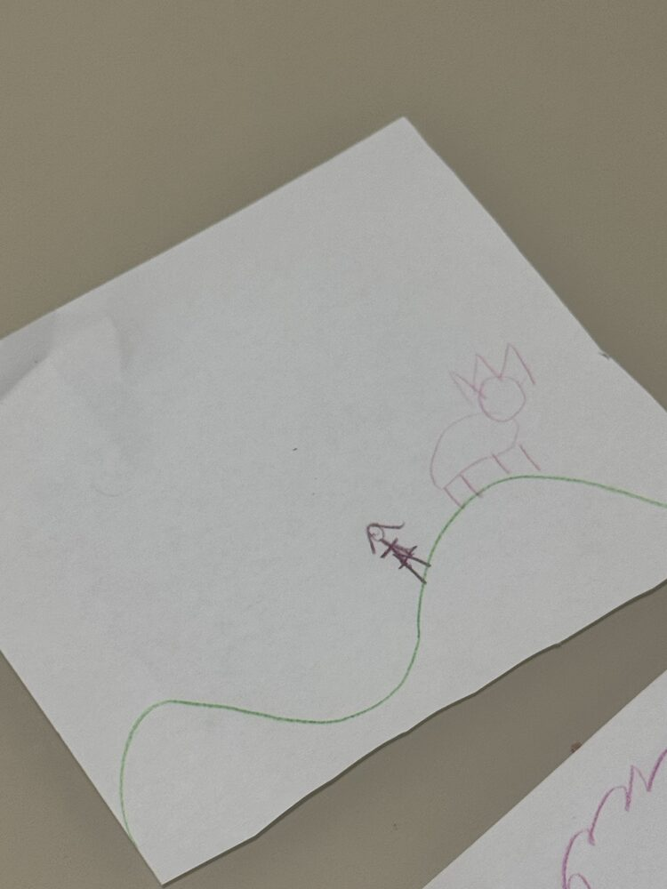
A tela de abertura imaginada pela Sofia: a menina subindo a colina verde para brincar com o unicórnio rosa lá no alto. - Publicado.
Controles na tela para o celular, teclado para computador sem controle, o repositório no GitHub e esta página.
Os pedidos, um a um
Depois da primeira mensagem, escrita pelo Rafael, todos os pedidos chegaram pela assistente de voz, ditados enquanto pai e filha conversavam. Aqui estão resumidos, com trechos das palavras deles.
- Criar um jogo de unicórnio com a fada, as cores até o arco-íris, o controle DS4 e o estilo do Stardew Valley; mostrar key-frames e roteiro para aprovar.
A Sofia escolheu: o jogo é visto de cima, parecido com o Stardew Valley.
Não programe ainda.
Refazer os key-frames e mostrar a direção artística.- A referência é sempre o Stardew Valley, sem usar outro nome para o estilo.
- Começa como cavalo que já voa baixinho; o cenário fica mais bonito com mais nuvens e cores; a cor dele chega cada vez mais perto do arco-íris.
- O desenho da Sofia: a figura grande é o controle, os doces são obstáculos e a caixa escrita "BARRA" é uma barra de chocolate. Desviar com cima e baixo.
A única coisa que o unicórnio pode comer e que deixa ele mais forte são nuvens de algodão-doce.
- A bolsinha: um botão vai até a nuvem e pega um pedacinho com a pata; outro botão come quando ele quiser.
O unicórnio tem vida.
Cada trombada num doce tira um pouquinho; sem vida, volta para o início.- Só o comecinho é perto do chão; da quarta cor em diante, só céu, depois estrelas e o arco-íris.
Aprovado! A Sofia está muito satisfeita com o planejamento.
Pode começar a programação.- O algodão-doce também devolve um coração. X para pegar, bolinha para comer.
- Abrir o jogo no laptop ligado na TV e testar com o DS4.
- Confirmar que o controle está pareado e funcionando no jogo.
A gente adorou o jogo!
Colocar "Jogo criado por Sofia" na tela inicial.- Uma musiquinha de fundo bem baixinha e agradável, no estilo de toque MIDI antigo.
- Usar um retrato em pixel art da Sofia como base para a personagem menina.
- O Rafael colou a imagem direto na sessão de programação.
- Na abertura, nada de retrato grande: a personagem pequena brincando com o cavalo, como animação de espera.
- Publicar no GitHub, funcionar no celular e no teclado, e contar o processo numa página.
- O endereço principal abre o jogo, e uma aba "História" conta todo o resto.
Os key-frames, versão por versão
O planejamento foi uma página com as telas do jogo desenhadas antes do código. Cada ideia da Sofia virava uma versão nova. Ver a versão final aprovada.
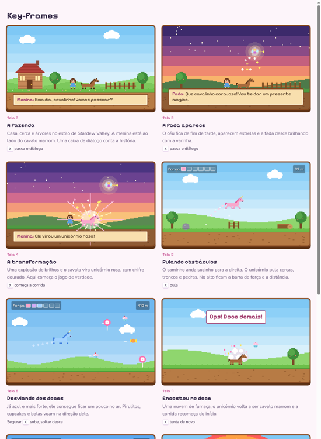
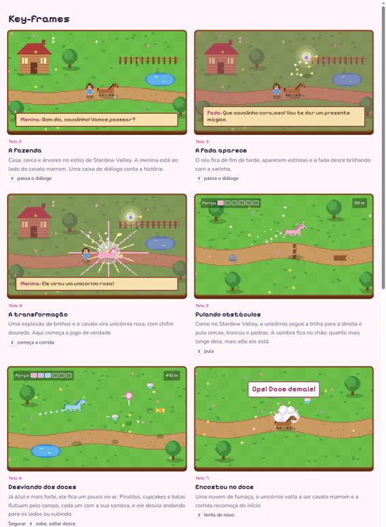
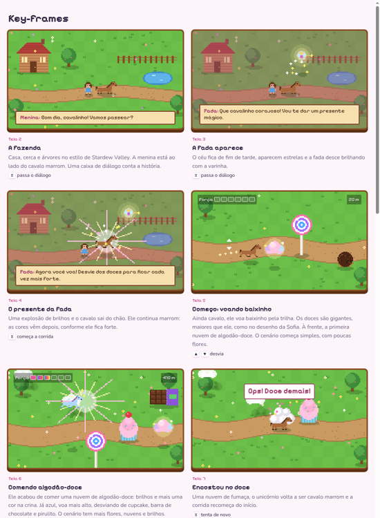
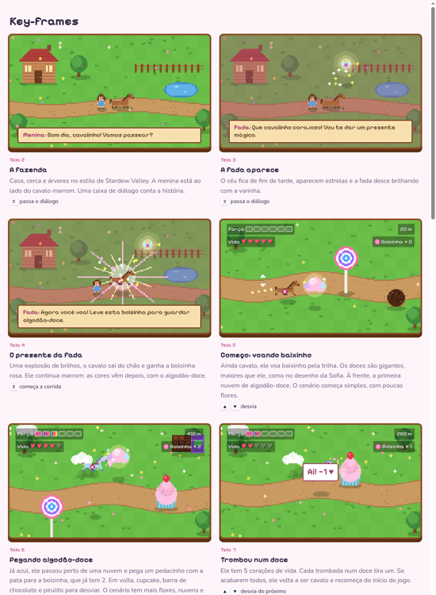
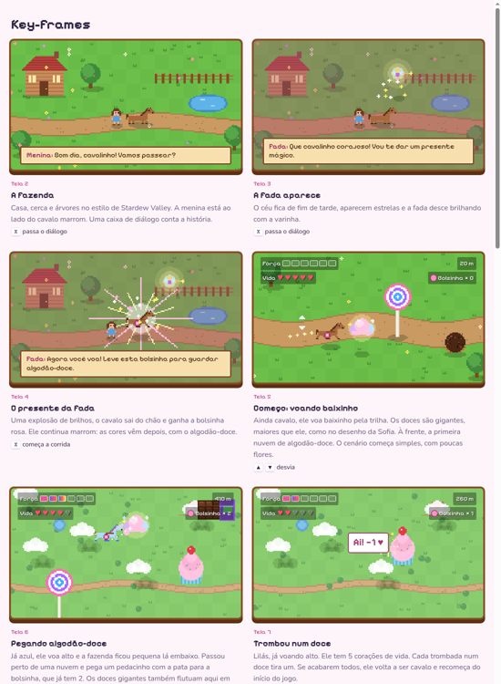
Prints do jogo
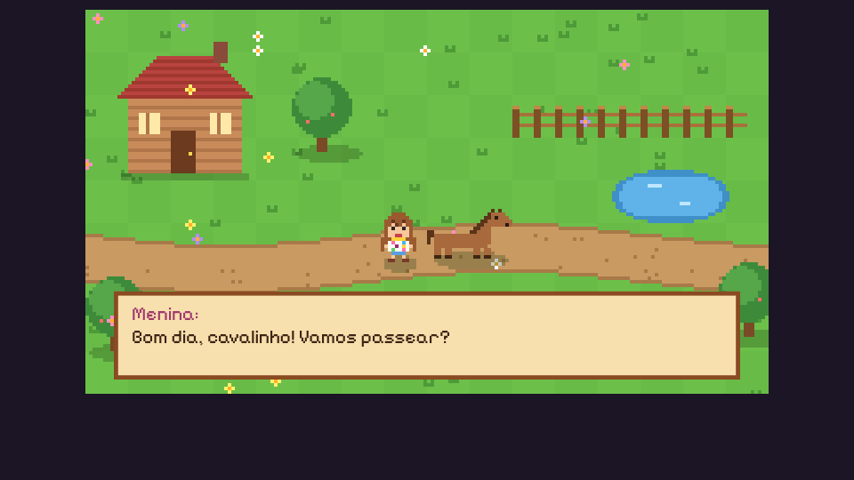
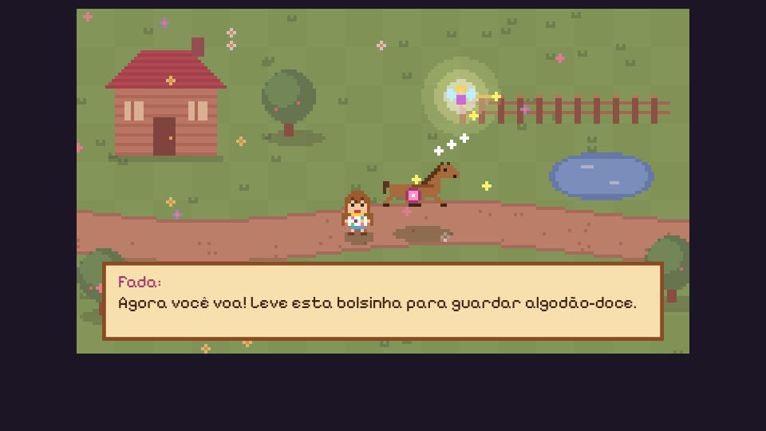
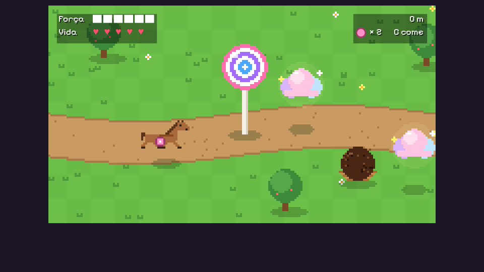
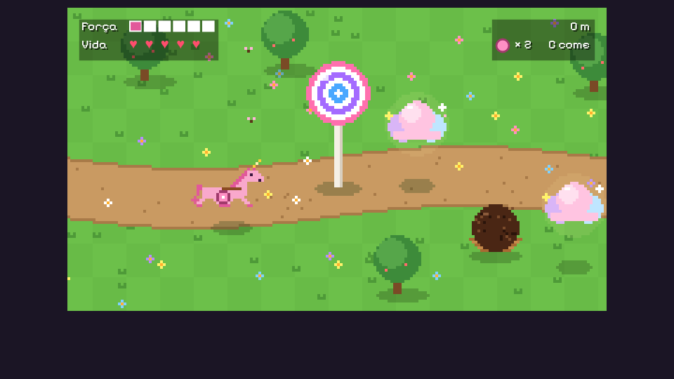
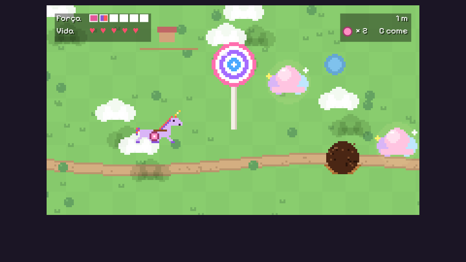
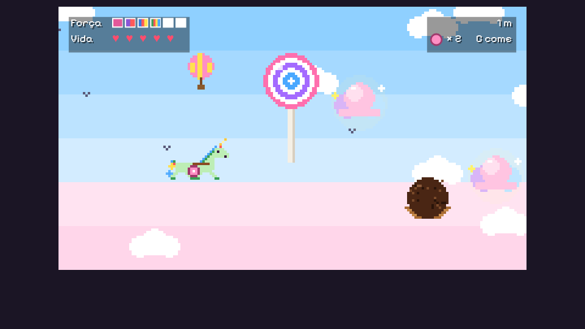
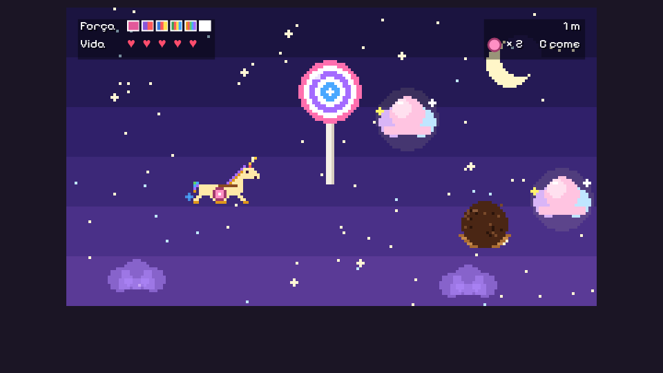
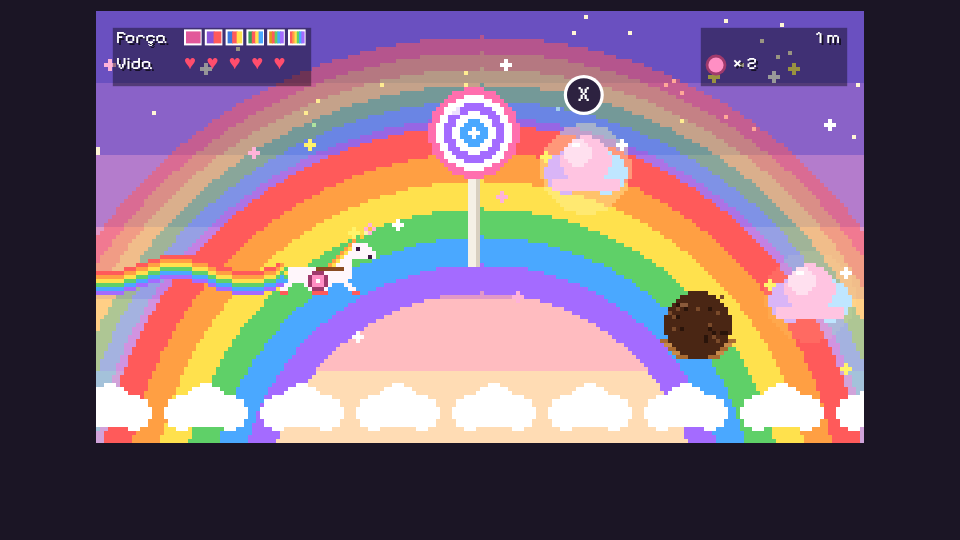
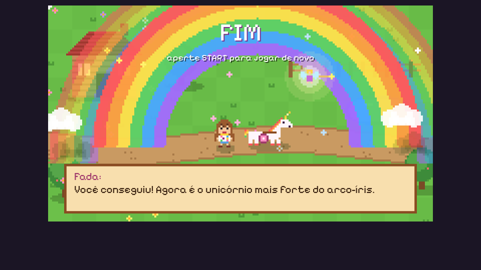
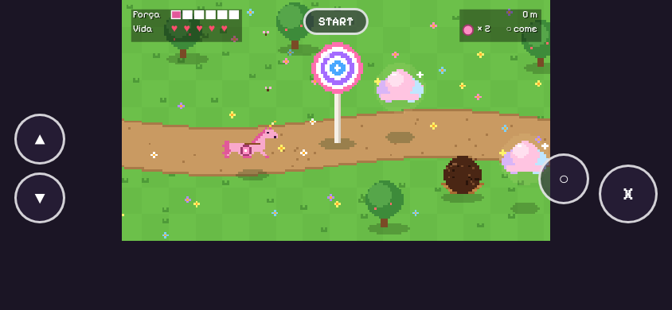
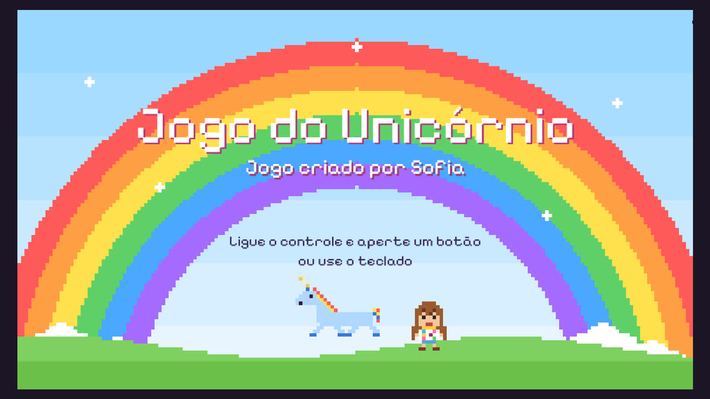
Por dentro
Sem imagens
Todo o desenho é feito por código, ponto a ponto, numa tela de 192×108 ampliada para a TV. Não há nenhum arquivo de imagem no jogo.
Só o navegador
HTML e JavaScript puro, cerca de 900 linhas, sem nada para instalar. O controle vem da Gamepad API e a música e os efeitos são gerados pela Web Audio.
Como foi testado
Capturas de cada tela num Chrome sem janela, uma partida inteira jogada por um robô e, no fim, a Sofia com o controle na mão.
O modelo de IA
- Programação
- Claude Opus 5.5 (
claude-opus-5-5) no Claude Code - Esforço
- Médio (medium), o nível de raciocínio escolhido para a sessão
- Assistente de voz
- O Claude no app do celular, que recebia as falas e repassava os pedidos
- Registro
- Uma tarefa e uma sessão de trabalho no rex, o sistema de tarefas do Rafael, com diário de cada passo
- Duração
- Cerca de uma hora e meia, do primeiro pedido à publicação